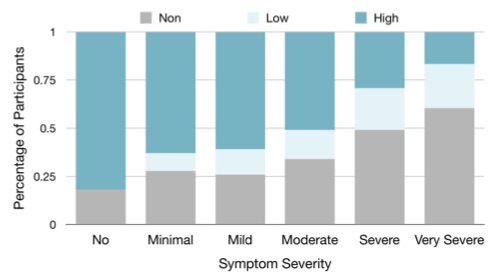

by R. Yim, J. Haddock, D. Needell
Submitted, 2021.
[ arXiv ] [ BibTeX ]
|  |
by J. Vendrow, J. Haddock, D. Needell, L. Johnson Algorithms, to appear, 2020. [ arXiv ] [ BibTeX ] [ Code ] |
|
by L. Johnson, M. Shapiro, R. Stricker, J. Vendrow, J. Haddock, D. Needell Healthcare, vol. 8, no. 4, 383-404, 2020. [ Journal ] [ BibTeX ] |
|
|
by R. Yim, J. Haddock, D. Needell Submitted, 2021. [ arXiv ] [ BibTeX ] |